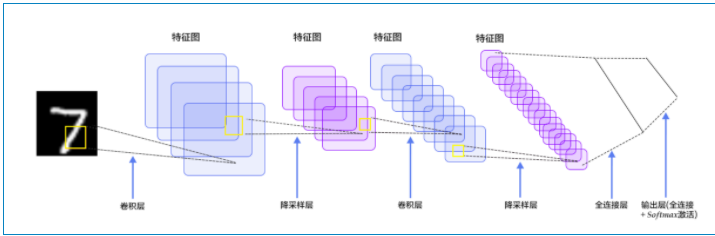
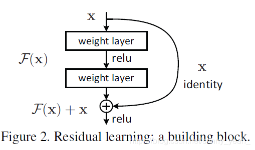

CNN的演变和特点总结
LeNet
LeNet-5是一个较简单的卷积神经网络。下图显示了其结构：输入的二维图像，先经过两次卷积层到池化层，再经过全连接层，最后使用softmax分类作为输出层。
VGGNet
VGG16相比AlexNet的一个改进是，采用连续的几个3x3的卷积核（步长=1，padding=0），代替AlexNet中的较大卷积核（11x11，7x7，5x5）
ResNet、解读
MobileNet
ResNet、AlexNex、论文解读
什么是ResNet
ResNet是一种残差网络，咱们可以把它理解为一个子网络，这个子网络经过堆叠可以构成一个很深的网络。咱们可以先简单看一下ResNet的结构，之后会对它的结构进行详细介绍。 
为什么要引入ResNet？ 我们知道，网络越深，咱们能获取的信息越多，而且特征也越丰富。但是根据实验表明，随着网络的加深，优化效果反而越差，测试数据和训练数据的准确率反而降低了。这是由于网络的加深会造成梯度爆炸和梯度消失的问题